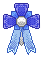
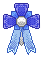
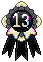
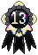

gaymer boy
Hideki is a towering 6'4" tall man with albinism who is living in Japan with his husband, is primarily a streamer and works part-time at his uncle's café. He also runs a Youtube channel about games on the side; cosplaying and doing make-up for others are core hobbies alongside gaming.
He is soft, expressive, and optimistic at his core, with a heart that's too big for his own good; he is sensitive to the emotions of those around him, and he tries to see the best in everyone, sometimes offering help at the cost of not helping himself. Of course, over the years he has worked on that, but the desire to do right sometimes triumphs logic. Just know that he is a friend who will be by your side through thick and thin.


gaymer boy
Hideki is a towering 6'4" tall man with albinism who is living in Japan with his husband, is primarily a streamer and works part-time at his uncle's café. He also runs a Youtube channel about games on the side; cosplaying and doing make-up for others are core hobbies alongside gaming.
He is soft, expressive, and optimistic at his core, with a heart that's too big for his own good; he is sensitive to the emotions of those around him, and he tries to see the best in everyone, sometimes offering help at the cost of not helping himself. Of course, over the years he has worked on that, but the desire to do right sometimes triumphs logic. Just know that he is a friend who will be by your side through thick and thin.


Character
Likes
- colourful clothing
- cooking for friends
- dogs
- cosplaying
- coding
Dislikes
- ice cold foods
- neglected plants
- attention
- people staring
- rejection / critcism
Details
Story
Childhood
Hideki was raised in a household where his parents were workaholics, and he often spent more time alone than around any other person. He was a socially awkward child, often preferring to lock himself in his room and to play on his consoles, finding it hard to interact with other children without some degree of anxiety. The most consistent interaction he had with other people was with babysitters that changed yearly.
The first 5-6 years of his life were a vicious struggle between his mother and father; his mother had always wished for a daughter and tried to mold Hideki into that desire, while his father did everything to stop that. In the end, he succeeded, but it lasted long enough to leave a permanent mark on Hideki's sense of identity. The relationship between him and his mother was anything but loving; she chided him over small things, never offered the attention he needed, put him down, and unknown to him, his father was, unfortunately, victim to her as well. She held the finance of the family and had him under her thumb, so he was unable to leave or take Hideki away. His father genuinely loved Hideki, but he didn't have much time to spend with him, and he walked on eggshells around his wife.
This all had changed at the age of 5 when his mother became pregnant with another child and when he was six, she gave birth to a young girl bestowed with the name Hitomi, what his mother had wanted all along. The albino became next to non-existent to his mother, rather giving the young girl the attention he never got — and he grew jealous until the young girl turned her attention to her big brother and wanted to genuinely spend time with him.
There was a struggle between him and his mother over her, but his father always made sure they found time for each other. Hitomi grew to be his best friend, helping Hideki open up and become more sociable and giving him someone to lean on for a bit when he didn't feel well. She was his light and he would protect her with his life if he could.
It was during this time that he had also met Haru and Raiden Lemarchal, two twin brothers that were stopping in the Edogawa district in Tokyo with their father. They were roughly around Hideki's age, only older by almost a year. It took a while for him to warm up to them, but with coaxing from his sister and Haru they all grew to be relatively close, leaving the young albino to be ecstatic to have found people who wouldn’t ignore him or drop him due to being a hard person to befriend.
He leaned more towards the quiet twin, Raiden, due to the other having some kind of presence that Hideki didn't mind ( silences between them never really felt awkward ). Hideki's favourite thing to do was to get Raiden to smile, even though that was next to impossible — the smiles he did squeeze out made every "accidental" bump over objects and scraped knee worth it.
He lead a relatively happy life, despite his parents and the trouble he got in at school when it came to fighting; he had his sister by his side and a small friend group that was tight-knit for a good handful of years. It was at the age of 15, when his sister was 9, that everything changed.
Teenage Years
He had lost his sister to a car accident when they were out one summer day: he had been holding on to her hand when something ahead caught her attention. Against his protests, she slipped out of his grip, running ahead through the crowds — over the noise she didn’t hear the oncoming car, soon succumbing to internal bleeding on the way to the hospital. Hideki’s mother ended up blaming him for her death while his father stayed silent, leaving the albino to gain a neurotic guilt complex that heavily weighed him down for many years. Around this time his own powers manifested when his anger and stress spiked, often blowing out lightbulbs or causing erratic patterns to appear on the screens of electronics.
Haru and Raiden also disappeared not long after, leaving him alone. The albino had never learned how to properly cope with his emotions from a young age, and often got overwhelmed by his own feelings and was in a constant emotional turmoil. His anger often lashed out towards his parents or other kids at school if they provoked him; he wouldn't waste time pouncing on someone if they insulted him and he often came home bruised and hurt, even more so than before. At moments he went out himself to seek trouble, people to fight just for the thrill of it, pain, and the violent outlet.
He had grown to have a dependency on oxycodone to drown out his emotions after he had suffered an injury and had to be on painkillers. He had contemplated ending it all by taking his own life with an overdose of them, though he always ended up backing out on any attempts or spitting out the pills. He went through a total of three attempts with the painkillers, not counting the four others across his lifetime.
Things changed when his uncle whom he had never officially met, James King, came to visit one day from a distant town and stayed over for a few days. He and Hideki got along almost immediately and the albino latched to him, not long after he left and after a few weeks of digging up information online and from his father, Hideki had decided to run away from home and to where his uncle lived, bag packed for a new life.
Though surprised, his uncle took him in and eventually became the father he never had truly had from the beginning. He finished high school in Karakura and settled into his life helping at his uncle’s cafe ( Cafe Latte ). James had also helped Hideki wean off his dependency upon oxycodone, and he tried his best to offer Hideki emotional support — and to this day Hideki is thankful for everything his uncle has done for him.
( Rewrite to account for James only initially visiting and having to find some way to move to Japan. Originally James had decided to make the jump to move to Japan to try to help both his brother and his nephew. )
19+ Up to Present
Hideki continued living under his uncle's care, having finished high school and remaining to work as a waiter in the cafe his uncle had owned for a few good years now. He was in a better and healthier place for his own mental health, but life at the time was dull and things were lackluster; pain was still some way to feel something and he still sought it out in the privacy of his room with a roll of bandages by his side. Anger still flared up in small doses and his knuckles ran raw with the times he's taken it out on his surroundings.
He met Raiden again one night in the cafe and the two reunited ( albeit they acted awkwardly around each other ). He met the girl Raiden shared an apartment with, Saki, and the albino began to branch out to meet other people, such as Llewella, Aurora, and Rafael, friends who had helped Hideki out when he wasn't feeling well and gave him support.
The albino struggled with helping himself, and having Raiden back, he wished to help his childhood friend with the troubles he was having, leading to frequent arguments and heated moments between them as Raiden pushed him away and Hideki tried to push closer, threatening to break the two apart. It took a long time until the ravenette allowed Hideki to get close, and even longer for the two to officially be considered together. Ups and downs followed, events that left the both of them hurt — but also helped to develop them, and eventually the two got married in France on June 3, 2015.
He got help for his own self through therapy, although it took a while to find it in Japan. Hideki is a lot happier with himself now and content, having put most of his past behind him and learning to look forward to the future. He still has moments where he becomes his own worst enemy, but he knows he has the support and aid to help when those times come around. There is a lot more confidence in his own identity and self and he's starting to branch himself out to different interests and events to try to create memorable experiences.
Currently, he is living in a house he and Raiden share. He often visits his uncle with Raiden, and still works as a waiter at the cafe, taking it upon himself to educate new employees and including himself in most tasks in the cafe; it has done wonders to help him open up over the years and to smooth out his turbulent personality from the past. On the side, he handles a youtube channel centered around breaking games in fun ways, and does streaming as a hobby with quite a decent following. His relationship with his father, although still uneasy, is slowly starting to heal now that he has separated from his wife—Hideki's mother.
Moodboard
Design Notes
Design Notes
- His freckles cover the bulk of his face, shoulders, and torso.
- Hideki has no set outfit, but tends to wear casual, colourful, and long-sleeved clothing (outfit inspo on pinterest).
Trivia
- He has OCA1A albinism, which affects his hair, eyes, and skin, though has learned to cope well with it throughout his life (minus having to avoid prolonged sun exposure). he also wears tinted contacts due to light sensitivity and vision problems.
- Suffers from generalized anxiety disorder and borderline personality disorder, but years of therapy and self-growth have helped with it a lot to have him reach a stable place.
- Owns a huskey but it lives with his uncle due to his husband having allergies.
- Often carries around a pokemon-themed bag with his laptop, or at least his portable consoles.
- Has a large collection of video-game themed collectibles like rare figurines and cards.
- In his teens he used to write fanfics on a small site, he gave up writing since then, but still checks in occasionally.


 



 

{kind=link}
{kind=link}
{kind=link}
{kind=link}
{kind=link}